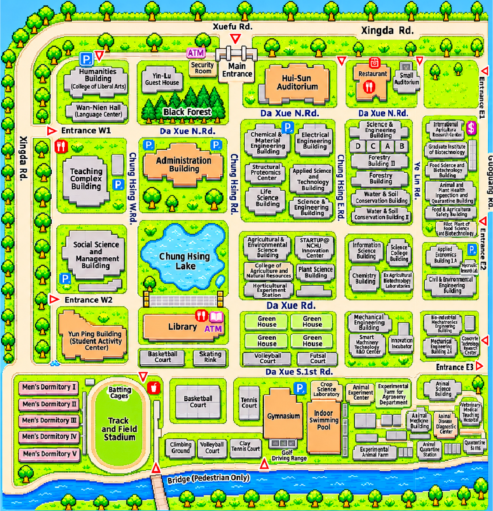

Tap a puzzle block to inspect missions or unlock via GPS.
Tap the glowing pins on the map to read building stories!
Discover hidden facts and history about NCHU landmarks in this unlocked sector.
LV.1 Campus Rookie
請選擇你的中興校園探索方式：
事件描述內容...